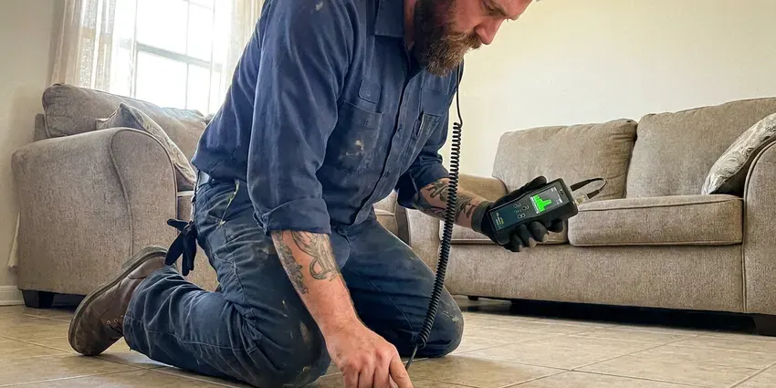

Commercial Plumbing in Enterprise, NV
A dead flushometer or a backed-up floor drain can close a dining room by noon. FMR Plumbing keeps Enterprise, NV businesses open and serving.
- Same-Day Commercial Service
- Certified Backflow Testers
- Licensed and Insured
- Maintenance Contracts Available

Backflow Test Coming Up in Enterprise, NV?
One call covers every location you manage.
Responsive Commercial Plumbing That Limits Downtime in Enterprise, NV
FMR Plumbing works in restaurants, medical offices, retail centers, schools, warehouses and apartment complexes around Enterprise, NV. Each one has its own rules. Dental suites need mixing valves and pump drains, and restaurants need interceptors sized to their fixture count and jetted on a schedule. Our plumbers have done both many times.
Some of what we do:
- Backflow assembly testing and rebuilds
- Grease interceptor service and kitchen line jetting
- Tankless rack and boiler-fed water heater service

Additional Plumbing Maintenance Services in Enterprise, NV
Our maintenance and specialty plumbing services in Enterprise, NV protect your home year-round and extend the life of every system.


Customers
Why Choose FMR Plumbing for Commercial Plumbing in Enterprise, NV?
Code requirements for Enterprise businesses go well past residential rules. Certified backflow testing every year, grease interceptors for kitchens and tempered water at hand sinks are all standard commercial requirements. We handle those. Your inspector sees a clean report instead of a correction notice.
- Minimal Downtime, Disruptive work happens before opening, after close or on weekends.
- Detailed Records, You get invoices, photos and test reports after every visit.
- Inspection Ready, Our work meets plumbing, backflow and health department requirements for commercial sites.
Citywide Coverage
We have worked inside a lot of Enterprise buildings, which means we know the common problems before we walk in. Older strips usually have tired cast iron. Newer offices more often have PEX supply lines, pressure reducing valves and tankless racks that need regular descaling.
Experienced Team
Each technician has worked in kitchens, medical facilities and multi-family buildings. They know what downtime means. Before any shutoff they stage parts, confirm the plan with your manager and keep the water off for as little time as the job allows.
Safety-First Approach
Our work is permitted when required and documented for inspectors and insurers. Certificates of insurance are available on request. If your management company needs a certificate listing it as additional insured, we can send one the same day.
Trusted Certified Enterprise Plumbing Services Professionals
At FMR Plumbing, we take pride in licensed, certified plumbing services throughout Enterprise, NV. Those papers on the wall mean something. Every repair, install and maintenance visit follows strict safety and quality rules, and the plumbers doing the work carry recognized industry credentials.
Call Us Now PHCC Plumbing Contractor Recognition
PHCC Plumbing Contractor Recognition Better Business Bureau (BBB) Accreditation
Better Business Bureau (BBB) Accreditation Angi Certified Pro
Angi Certified Pro ISO 9001 Quality Management Certification
ISO 9001 Quality Management CertificationCommercial Plumbing Work We Handle in Enterprise, NV
Backflow Assembly Testing and Rebuilds in Enterprise
Most water providers require annual tests on commercial backflow assemblies, and many send late notices that come with fines. Test early. We test reduced pressure zone, double check and pressure vacuum breaker assemblies with gauges calibrated every year and submit the results online or on paper, whichever your provider uses. Failed devices get rebuilt on the spot when we have the kit.

Grease Interceptor and Line Service in Enterprise, NV
Grease does not stay in the trap if the trap is full or the baffles are broken. It ends up in your line. We inspect interceptors, replace failed baffles and outlet tees and jet the kitchen lines that feed them, which removes hardened grease that a cable just slides past. Regular jetting means fewer backups during the dinner rush.
Commercial Drain Cleaning and Hydro-Jetting in Enterprise
Commercial drains carry grease, paper towels and food waste in volumes no house ever sees. A cable just pokes a hole. Our jetters push water at 3,000 to 4,000 psi through a spinning nozzle that scours the full pipe wall, which clears 4-inch and 6-inch lines back to bare pipe. A jetted line stays open far longer than a cabled one. Restaurants, schools and apartment stacks are where we see the biggest difference.
Multi-Family and Property Management Plumbing in Enterprise
Apartment complexes need a plumber who can handle many units and quick turns between tenants. We repair leaks, replace water heaters, clear stacks that serve several floors and repipe whole buildings while keeping residents informed about every shutoff. Managers get steady unit pricing. Invoices list each unit number, so your accounting team can bill back to the right account.
After-Hours Commercial Plumbing in Enterprise
Emergencies at a business cost more the longer they last, so speed matters more than the hourly rate. Water on the floor comes first. We isolate the leak, get restrooms and kitchen lines back in service and then schedule any larger repair for a slow period so you are not paying overtime on non-urgent work. Burst pipes, sewage backups and dead water heaters all qualify.
Commercial Water Heater Service in Enterprise, NV
Big tank heaters fail in a few common ways: a failed gas valve, a cracked flue baffle, a stuck T and P valve or a tank full of scale. Each sounds different. Our techs test flue draft, check combustion, measure the temperature at the farthest fixture and flush sediment, which together tell us whether to repair the unit or plan its replacement. Tankless racks get descaled. Recirculation pumps on long runs get tested as part of the visit.
Commercial Restroom Fixture Repair in Enterprise, NV
Restroom calls are the most common commercial work we do. Running flush valves, stuck urinals and dripping sensor faucets usually need a diaphragm, a solenoid or fresh batteries. We stock those. Wall-hung toilets that keep clogging or rocking get a carrier check, since a loose bowl can leak inside the wall. Low pressure on one fixture usually points to a clogged supply stop.

Commercial Water Heaters and Boilers in Enterprise, NV
Gyms, commercial kitchens and apartment buildings burn through hot water in short, heavy peaks. Our work covers high-input tanks, multi-unit tankless racks and boilers feeding indirect storage tanks. Water in much of Nevada is very hard, and scale buildup is one of the most common reasons water heaters and fixtures fail early. Scale cuts output fast. We put the heaters on a descaling schedule and install mixing valves so hand-wash sinks get tempered water at a safe temperature.
A Local Commercial Plumber in Enterprise, NV
Response time matters more for a business than for a house. A restroom down is sales lost. We route the closest available commercial plumber to your address and give you an arrival window when you call, not a vague promise to get there today. Most arrive within a couple of hours.
Businesses around Enterprise keep calling FMR Plumbing because the same plumbers come back. They remember where the cleanout is hidden, which unit has the touchy shutoff and what the heater was doing last time. Familiar techs finish faster. It also means fewer surprises when a bigger repair comes up, because someone already knows the system.
FMR Plumbing at a Glance
- Licensed and insured plumbers serving Enterprise, NV
- Same-day appointments and 24/7 emergency response
- Upfront, flat-rate pricing before work begins
- 4.8-star rated by 903+ Nevada customers
Enterprise Map
Enterprise Information
- Population
- 221,831
- Area codes
- Local
- Service area
- Enterprise and communities within 40 miles
- Nearby
- Spring Valley, Paradise, Summerlin South, Winchester
A busy restroom in Enterprise, NV can see more flushes in a day than a house sees in a month, so valves and drains wear out faster. Intense summer heat and a dry climate are the main stresses on plumbing in Nevada, especially in the southern part of the state.
Talk to a Plumber
Call FMR Plumbing for honest, reliable plumbing from people who know the trade in Enterprise, NV.
Our Specialized Plumbing Services in Enterprise, NV
At FMR Plumbing, we handle the full list of plumbing services across Enterprise, NV. We go from leak detection all the way to full system installations, for homes and commercial buildings, and we do it quickly at a fair price. Take a look at our core services below:


How a Commercial Plumbing Call Works in Enterprise, NV
FMR Plumbing handles commercial calls in Enterprise, NV the same way every time, so your staff knows what to expect.
Call or Request a Quote
Call (725) 360-1766 or use the form to describe the problem. We ask what is down and when you are open so the right plumber comes.
On-Site Diagnosis
A commercial plumber visits your Enterprise business, checks the system with a camera or gauges and finds the cause.
Written Proposal and Repair
You get a written price before we begin. We make the repair, test everything and clean up the area.
Frequently Asked Questions About Commercial Plumbing in Enterprise
Small commercial repairs typically cost between $200 and $600, with larger projects quoted on site. Backflow tests usually cost $75 to $175 per device.
Maintenance staff can swap a toilet seat. Backflow devices, gas lines, water heaters and anything that needs a permit should go to a licensed plumber. A bad repair can fail an inspection, void an insurance claim or contaminate the water supply, which costs far more than a service call.
Staff can replace a toilet seat or clear a minor sink clog. Backflow work, gas lines, water heaters and code-regulated repairs need a licensed plumber.
Watch for floor drains that gurgle, sewer smells near restrooms and a water bill that jumps without a reason. Weak pressure upstairs counts too. Brown rings on ceiling tile under a restroom or kitchen usually mean a leak overhead, and finding it early protects the ceiling and whatever sits under it.
Slow floor drains, gurgling toilets and sewer smells point to buildup or damage. A camera inspection shows exactly what is going on.
Our crew works from your plans, files permits and works alongside your GC. We schedule inspections ahead so your opening date holds.
Yes, commercial repairs and installs include a written warranty on parts and labor. New equipment also carries its factory warranty.
Yes. Burst pipes, sewage backups and dead water heaters get answered any hour. While the plumber drives over, we can walk your staff through shutting off the main so the damage stops growing.
Hear From Customers Who Hired Our Plumbing Experts

Nathan E.
Our tankless heater kept throwing an error code and shutting off mid shower. The tech flushed the heat exchanger, which was full of scale, and replaced a bad flow sensor. Hot water has been steady for half a year now.
Water Heater Repair · Spring Valley, NV
Robert G.
The camera showed a full break in our clay sewer line near the street. FMR Plumbing replaced it with a trenchless pipe burst, so the only digging was two small pits in the yard. They let us watch the footage before and after.
Sewer Line Replacement · Henderson, NVJames P.
Our restaurant had a slow leak at the hand sink that was rotting the cabinet base. FMR Plumbing came in at six in the morning before prep, replaced the trap and both supply lines, and was packed up before my first cook clocked in.
Commercial Plumbing · Spring Valley, NV
Monica A.
Our water bill nearly doubled in one month with no change in how we used water. The tech checked the meter, heard the leak under the hallway with his equipment, and opened a hole about a foot square. Fixed the same day.
Slab Leak Repair · Whitney, NV
Diane F.
My kitchen faucet had dripped for months and I finally got tired of hearing it at night. FMR Plumbing came out the next morning, replaced the cartridge and the O rings, and tightened a loose base that was letting water under the sink.
Faucet Repair · Enterprise, NV
Emily R.
The shutoff valve under our kitchen sink snapped off in my hand on a Sunday morning. FMR Plumbing had someone out by early afternoon. He replaced both angle stops with quarter turn valves and showed me where our main shutoff was, which I honestly did not know.
Plumbing Repair · Henderson, NV